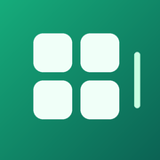
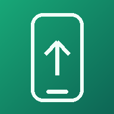

QuickControl
0.1.0~beta1 · betaKhay tiện ích nổi, mở nhanh ứng dụng, URL và phím tắt.
Đã biên dịch, chạy kiểm tra host và kiểm tra gói. Chưa chạy trên iPhone thật.
Kho tweak do Sentechtipsvn phát triển cho iPhone 7 Plus, iOS 15.8.8 và Dopamine rootless.
https://raw.githubusercontent.com/Sentechtipsvn/Sentechtipsvn-tweak/master/repo/
Khay tiện ích nổi, mở nhanh ứng dụng, URL và phím tắt.
Đã biên dịch, chạy kiểm tra host và kiểm tra gói. Chưa chạy trên iPhone thật.

Cử chỉ Home kiểu iPhone X, giữ nhận diện và bố cục bàn phím gốc.
Đã có phản hồi cử chỉ chạy mượt trên iPhone 7 Plus của tác giả. Các tình huống khác vẫn cần kiểm thử.
Bật chia sẻ mạng một chạm, xem máy khách và điều khiển từ Control Center.
Bản 0.1.1 đã có xác nhận hoạt động. Nút Control Center của 0.2.0 đã được xác nhận hiển thị; các chế độ mới cần thử thêm.